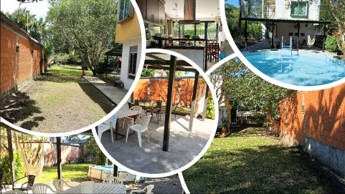

Presentación General
Ubicada en una de las zonas campestres de mayor valorización y tranquilidad de Villavicencio, la Finca "El Rinconcito" es una propiedad que combina el confort y la tranquilidad con el disfrute de la naturaleza llanera. Con un terreno plano de 1.280 m² (que se amplía hacia el fondo garantizando total privacidad), esta propiedad fue planificada para ofrecer una experiencia de descanso cómoda, sostenible y de muy bajo costo de mantenimiento.

1. Ubicación, Acceso y Entorno
Conectividad Exclusiva y Ubicación Estratégica: Su ubicación es ideal tanto para el descanso como para una vivienda permanente, tomando como referencia puntos clave de conectividad:
- A solo 15 minutos de la salida del túnel de Villavicencio.
- Ruta de acceso directo: Saliendo por la vía a Puerto López e ingresando por la vía principal a la Universidad de los Llanos (Unillanos), tomando como punto de referencia el monumento al Soldado Caído, justo antes de la base aérea de Apiay.
- Privacidad total: El acceso final a la propiedad se realiza a través de una vía en servidumbre destapada, lo que garantiza un entorno aislado del ruido vial, seguro y sumamente privado.

2. Descripción General y Distribución Espacial
Emplazada sobre un generoso terreno plano de 1.280 m² que se ensancha hacia el fondo para ofrecer mayor privacidad, la propiedad cuenta con una casa campestre de dos pisos diseñada bajo una óptima distribución y aprovechamiento de la luz y el aire:
Primer Piso (Área Social e Interior)
Cuenta en su zona interna con una cómoda habitación, un baño social completo, cocina abierta con mesón de servicio más salón-comedor integrado.
Gran Salón Exterior (Porche)
Conectado directamente a la zona social del primer piso, se destaca un espectacular porche cubierto de 46 m². Funciona como el corazón de la casa en el exterior, albergando sala y comedor independientes y posibilidad de incluir hamacas bajo total protección del sol.
Segundo Piso (Zona Privada)
Dispone de dos amplias habitaciones, cada una con su propia terraza independiente. El nivel se complementa con un baño familiar completo y una tercera terraza adicional, ideal para contemplar los atardeceres llaneros.


3. Ventajas Técnicas, Sostenibilidad y Conectividad
Infraestructura Inteligente y Alta Eficiencia Operativa: La propiedad fue concebida bajo criterios técnicos de autonomía y confort:
- Confort Térmico y Durabilidad (Cubierta Tipo Colonial Verde): Estructura protegida con láminas de acero preformadas tipo teja colonial de color verde. Combina una estética campestre impecable con alta resistencia climática y aislamiento térmico natural.
- Diseño Paisajístico y Mitigación Hidráulica (El Caño): El costado derecho de la propiedad colinda con un caño natural que ha sido intervenido con 12 metros lineales de revestimiento artesanal en piedra. Esta magnífica obra civil de ingeniería y paisajismo estabiliza y encauza el cuerpo de agua de forma limpia y estética.
- Conectividad Total de Alta Velocidad: Cuenta con servicio activo de Internet por Fibra Óptica, un atributo escaso y muy valorado en zonas campestres que permite el teletrabajo sin interrupciones.
- Autonomía en Suministro de Agua: Sistema de abastecimiento independiente mediante aljibe propio y motobomba, el cual surte un tanque elevado de reserva de 500 litros que distribuye por gravedad (costo de factura de agua equivalente a cero $0).
- Servicios Públicos y Proyección de Gas: Red de energía eléctrica convencional con recolección de basuras mensual. Cocción actual con gas propano (cilindro), con la red de gas natural ya disponible de forma subterránea en la vía de acceso para una conexión domiciliaria directa a futuro.

4. Costos de Mantenimiento Mensual (Economía de Operación)
Una de las mayores virtudes de "El Rinconcito" es su bajísimo costo fijo mensual, al ser un lote particular libre del pago de cuotas de administración:
| Estado de la Propiedad | Energía y Aseo | Internet (Fibra Óptica) | Total Mensual Aprox. |
|---|---|---|---|
| Temporada Baja (Deshabitada) | $40.000 - $45.000 | $70.000 fijos | $110.000 - $115.000 COP |
| Temporada Alta (En Uso / Ocupada) | $70.000 - $75.000 | $70.000 fijos | $140.000 - $145.000 COP |
¿Deseas más información o agendar una visita?
Propiedad al día en documentación, tradición, escrituras e impuestos, lista para traspaso inmediato.
Precio de Venta: $530.000.000 COP
Venta directa con el propietario, sin intermediarios.
📞 Contactar por WhatsApp / Solicitar Cita